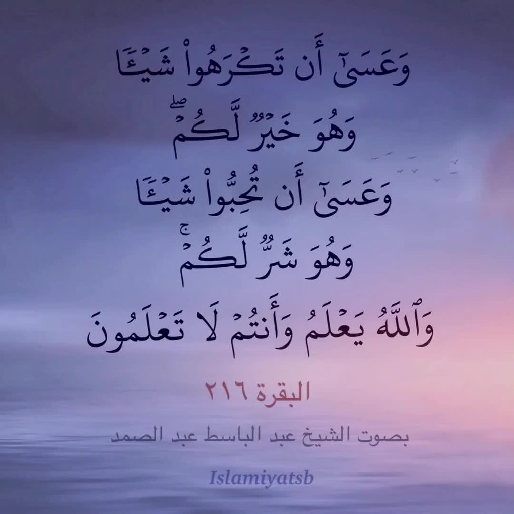

Dear Mamy,
I wanted to wish you the happiest birthday ever. I know this is not the regular (Aya’s crusty handwriting) letter, but considering our circumstances, I thought I’d show my love virtually. I know I’ve been in my own human cocoon lately, doing work nonstop and not spending the most of my time with you, but oh how I wish I could just spend all days hanging out with you. You’re honestly the best mom I could ever ask for. Actually, let me rephrase that, you’re the greatest bestfriend I could ever ask for. You’re always there for me no matter what. I don’t think anything or anyone could amount to the biggest blessing in my life, you. You’re truly the biggest blessing in my life. I know there have been times where we weren’t on the greatest terms. Times where we wanted to pull each other’s hairs out. That’s friendship for you. We fall back, but we get back up even stronger. I hope you know that I’ll never ever blame you for any of the hardships I’ve been through. So you should never blame yourself as well. I know maybe I might’ve shown a bit of a push lately, but that’s just my own stupidity. All these words can’t amount to all the love I have for you. It all started when I was born. When you held me for the first time. That’s when my love got splattered all over the place (in forms of pee and diaper changes). That’s when I felt the most safety in my life. The moment I realized that I could do anything in this world, because I have you. All my success in life came from you. From you pushing me towards the washroom so I can pee by myself, to you pushing me to study for my finals to graduate and conquer the real word. It was all because of you. Your wise words and guidance have gotten me through the hardest moments of my life. Your embrace (aka the world famous healing hug everyone loves) still makes me feel like I can get through anything. Mamy you’re the reason I get up in the morning and push through hard days. The reason I stay up all night studying. The push I need when I’ve gotten too far from god. You deserve the world and more, I wish I can give it to you. Inshallah one day I’ll be able to, but for now, you’re going to keep getting these cheesy Aya gifts every year. I love you so much mamy, have the greatest day ! Thank you for pushing me towards success, I’ll always live with the words you give me.

P.S if anyone tries to mess your day up, tell me so I can throw a shebsheb in their face and call them a bitch :)